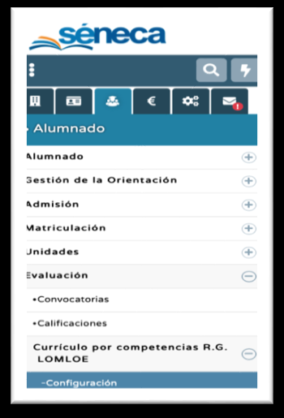
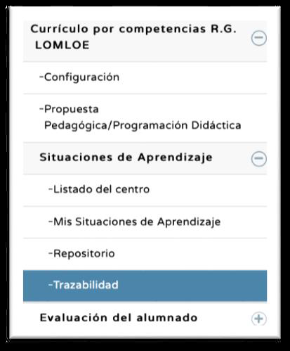
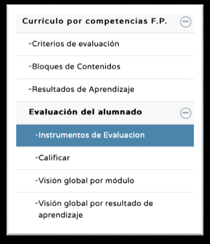
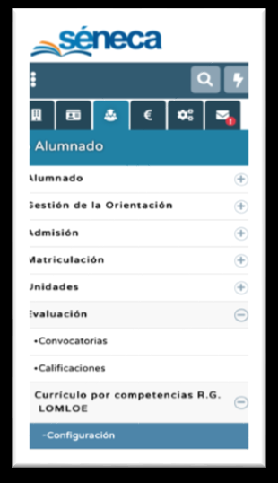
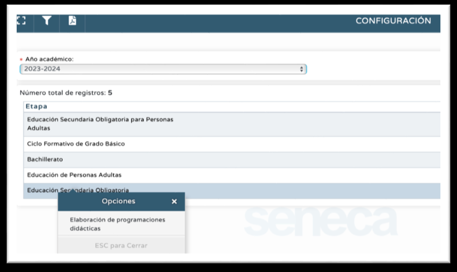

Asignación de permisos.
Las acciones que debe realizar el Equipo Directivo son las siguientes:
1. ASIGNACIÓN DE PERMISOS:
Este requisito está asociado a otro distinto: la configuración del Perfil Área-Materia, el cual veremos más adelante y que solo es posible con los permisos que habiliten para editar las programaciones didácticas. Para gestionar currículo en Séneca (programaciones didácticas) y evaluar Criterios de evaluación se necesitan los permisos adecuados:
a. Es conveniente distinguir un perfil (Profesorado, Dirección, Tutor Legal,…) de un permiso. Los permisos se asignan al perfil Profesorado, luego para usarlos habrá que entrar en Séneca con perfil Profesorado.
b. Por defecto todo el profesorado tiene permiso de evaluador. Este permiso lo tiene asignado por defecto todo el profesorado, por lo que todos pueden usar los Módulos de Competencias y el Cuaderno para evaluar.
c. Existen dos permisos:
- Coordinador. Habilita a la gestión de los Módulos de Competencias (Módulo Currículo por Competencias R.G. LOMLOE y Módulo Currículo FP) y, por tanto, a la gestión de todo el currículo. Por tanto, el coordinador:
- Tiene activa la entrada Configuración del Módulo Currículo por Competencias R.G. LOMLOE, con la capacidad de asignar permiso de elaborador de programaciones didácticas a otros profesores/as.

- Puede acceder a todas las programaciones didácticas. Por tanto, puede copiar programaciones de un curso anterior para todas las áreas-materias-ámbitos y tiene la capacidad de editar todos los apartados de cada una de ellas. (Vídeos de apoyo: Programaciones Didácticas, Aspectos Generales, Concreción Anual). Al poder editar las programaciones tiene la capacidad de editar el Perfil Área-Materia de cada una, requisito del que hablaremos más adelante.

- Puede dar de alta evidencias dentro del Módulo Currículo por Competencias R.G. LOMLOE (Alumnado-Evaluación-Módulo Currículo por Competencias LOMLOE-Situaciones de Aprendizaje-Trazabilidad)

- El permiso de coordinador es necesario para poder gestionar los pesos de Resultados de Aprendizaje y Criterios de Evaluación en el Módulo Currículo FP. Por tanto, es necesario dar dicho permiso a los profesores encargados en el centro de hacerlo.
- El permiso de coordinador se asigna con perfil Dirección, en la ruta Personal-Personal marcando en la última columna (derecha, Coordinador) al profesorado que tendrá ese permiso. El perfil Equipo Directivo está habilitado para las mismas operaciones que el profesor con permiso de Coordinador
- Elaborador de programación didáctica. Este permiso habilita para la edición de la programación didáctica de la que se es elaborador. Por tanto:
- Puede copiar la programación didáctica de un curso anterior (si está realizada bajo el mismo currículo) y puede editar la del curso presente para esa área-materia-ámbito.

- Al poder editar las programaciones tiene la capacidad de editar el Perfil Área-Materia de un área-materia-ámbito, requisito del que hablaremos más adelante.
- Se asigna con perfil Dirección o con perfil Profesorado con permiso de coordinador en la ruta Alumnado-Evaluación-Currículo por Competencias R.G. LOMLOE-Configuración. Seleccionando la etapa y pinchando después en el área-materia-módulo correspondiente se despliega el menú Elaboradores de programaciones didácticas. En la siguiente pantalla marcaremos al profesorado que queremos que tenga ese permiso, observando que en el listado disponible no aparecerán los profesores/as con permiso de coordinador (es un permiso superior).

Este permiso está habilitado para las etapas y áreas-materias-ámbitos cuya programación puede diseñarse en Séneca. Por tanto, no está disponible para Formación Profesional. Como ya dijimos, en Formación Profesional solo se realiza la gestión de pesos de Resultados de Aprendizaje y Criterios de Evaluación, así como dar de alta instrumentos de evaluación. Para ambas operaciones es necesario permiso de coordinador. De la misma forma no pueden elaborarse en Séneca las programaciones de áreas y materias cuyo currículo no está normalizado (no está en norma), como por ejemplo el Área Lingüística de Carácter Transversal, la Atención Educativa, las áreas y materias de diseño propio, los Proyectos Interdisciplinares,…